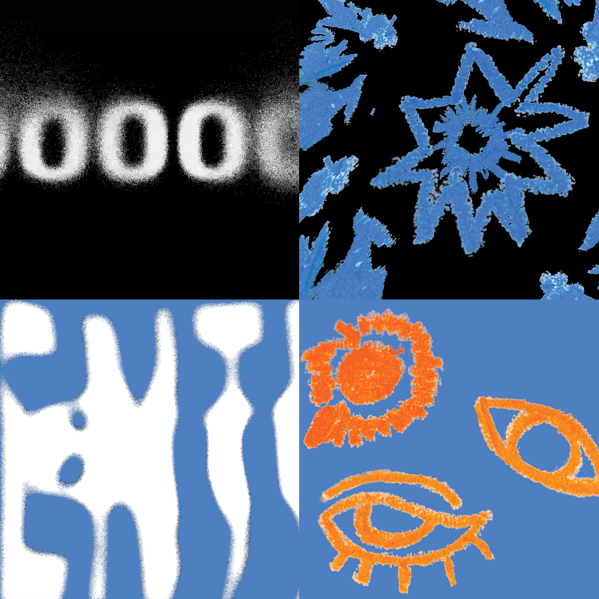

Watch AnimationPLAYGROUND.
Mixed Media Experiment
Overview
An experimental piece combining kinetic text with mixed media textures.
Process
I began by animating text, but found I was focusing on what the words meant rather than the shapes they formed in motion. While considering how to resolve this, I became interested in mixed media and began layering textures into the typography. This involved extensive tutorials, trial and error, and problem-solving as I went.
Reflection
My direction shifted repeatedly during the process, and the final piece reflects that: blurry textures, overlapping elements and shifting focus mirror how my thinking moved. I came away with two insights. First, experimenting can produce ideas I wouldn’t have reached through planning alone. Second, there is a point where exploration becomes unfocused, and I should have defined what the piece was meant to communicate earlier.
Next Steps
In future projects I want to balance exploration with commitment, setting a clear communicative goal early while leaving room for experimentation within it.
made on: After effects
music: Pop Rock Dry Room Beat Middle Drum Loop 115 Bpm by RomanSpiridonov